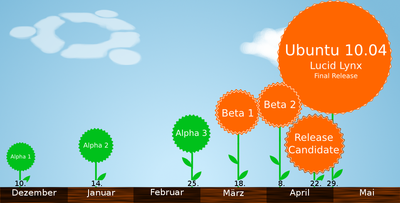
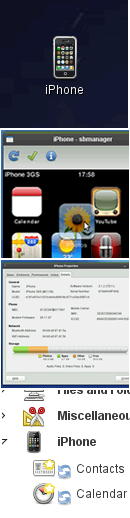
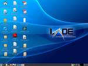

Lucid Lynx
Die Ubuntuversion nach Karmic Koala heißt 10.04 „Lucid Lynx“ und ist am 29. April 2010 erschienen. Diese Version ist, gemäß dem üblichen Zweijahres-Turnus, wieder eine LTS-Version. Auf Desktop-Computer-Systemen wird „Lucid“ drei Jahre (36 Monate) mit Aktualisierungen versorgt, auf Serversystemen fünf Jahre.
| Ubuntu 10.04 LTS | |
| Basisdaten | |
| Codename: | Lucid Lynx |
| Deutsche Übersetzung: | "Heller" oder "leuchtender" Luchs |
| Status: | nicht mehr unterstützt |
| Veröffentlichungstermin: | 29. April 2010 |
| Unterstützt bis: | 9. Mai 2013 (Desktop) bzw. 29. April 2015 (Server) |
| « Zeitleiste » | « 9.10 ... 10.04 LTS ... 10.10 » |
Allgemein¶
Kernel¶
Der Luchs beinhaltet den Kernel 2.6.32  (Quelle ). Dieser ist von den Kernel-Entwicklern ebenfalls als „long-term“-Version eingestuft, so dass er über die gesamte Lebensdauer von 10.04 mit Updates versorgt wird.
(Quelle ). Dieser ist von den Kernel-Entwicklern ebenfalls als „long-term“-Version eingestuft, so dass er über die gesamte Lebensdauer von 10.04 mit Updates versorgt wird.
Startvorgang¶
Nutzer bestimmter Hardware (Netbooks und SSD-Festplatten) können sich freuen, verspricht doch Mark Shuttleworth einen Startvorgang in etwa 10 Sekunden. Aber auch für Nutzer „einfacherer“ Hardware gibt es erneut eine deutliche Verkürzung der Startzeit (siehe Phoronix Testbericht  ). Auch eine neu gestaltete grafische Anmeldung ist mit Plymouth , ein aus dem Fedora-Projekt stammender graphischer Bootloader, ebenfalls integriert.
Referenz-Gerät für die 10 Sekunden-Angabe ist der Dell Inspiron mini 10v .
). Auch eine neu gestaltete grafische Anmeldung ist mit Plymouth , ein aus dem Fedora-Projekt stammender graphischer Bootloader, ebenfalls integriert.
Referenz-Gerät für die 10 Sekunden-Angabe ist der Dell Inspiron mini 10v .
DeviceKit ersetzt HAL¶
HAL wurde - im Gegensatz zu Karmic, wo er nur teilweise angepasst wurde - nun vollständig durch DeviceKit ersetzt. Das gilt allerdings nur für den Startvorgang. Einige Anwendungen, wie das beliebte VirtualBox, benötigen weiterhin HAL, so dass es natürlich noch bereitgestellt wird.
Grafik & Grafikkarten¶
 Für Nvidia-Nutzer ergeben sich neue Möglichkeiten. Nicht nur sind drei verschiedene proprietäre Treiber (nvidia-current (195.36.15), nvidia-173, und nvidia-96) erhältlich: durch das neue Alternativen-System ist es möglich, alle drei Pakete zur gleichen Zeit installiert zu haben.
Weitere Neuerung: Der Nvidia-Treiber nouveau ersetzt den bisher eingesetzten freien Grafiktreiber nv, wie bryceharrington auf der Mailingliste schreibt. Der neue offene Treiber unterstützt neben einer stabilen 2D-Beschleunigung auch 3D-Hardwarebeschleunigung, die jedoch momentan noch experimentell ist.
Cloud Computing¶
Ubuntu 10.04 ermöglicht ein noch intensiveres Cloud-Computing-Erlebnis für diejenigen Anwender, die Amazons EC2-Service nutzen oder eine eigene „Rechnerwolke“ aufbauen möchten. Es gibt neue Hilfsmittel und Verbesserungen, um Ubuntu einfacher innerhalb dieser „Clouds“ positionieren zu können.
Weboffice-Integration¶
In Zusammenarbeit mit der Zoho Corp. bietet 10.04 die vollständige Integration der Online-Office-Anwendungen von Zoho. Dokumente lassen sich bspw. direkt vom Rechner oder aus einem E-Mail-Anhang heraus öffnen und in der Online-Anwendung editieren, ohne dass nach einem Login gefragt wird oder ein Account erstellt werden muss. Die Dokumente lassen sich auch wieder auf dem lokalen Rechner speichern. In der Cloud lassen sie sich freilich nur speichern, wenn man auch einen Account bei Zoho erstellt. Dies funktioniert unabhängig davon, ob Firefox, Chromium oder Opera als Standardbrowser eingestellt sind. Vorinstalliert ist die Zoho-Integration nur bei der Netbook-Version für die ARM-Architektur. Alle anderen können allerdings problemlos das Paket webservice-office-zoho installieren.
Ubuntu One¶
Mit Ubuntu 9.10 kam Ubuntu One, eine Anwendung, die das Speichern und Synchronisieren von Daten online bequem ermöglichte. Ubuntu One stellte jedem Nutzer 2 GB Online-Festplattenspeicher kostenlos zur Verfügung, um Dateien, Kontakte und Tomboy-Notizen mit Ubuntu und der „Cloud“ zu synchronisieren. Gegen eine monatliche Gebühr von 8 Euro bekam man 50GB Speicherplatz und die Möglichkeit der Synchronisation mit Mobiltelefonen. Zunächst konnten nur Kontakte synchronisiert werden. Über Evolution war das bereits direkt möglich. Für andere Mailprogramme gab es Funambol-Plugins, welche die Daten abglichen. Zur Synchronisation mit dem iPhone gab es eine kostenlose Ubuntu-One-Anwendung im App-Store. Außerdem neu in Ubuntu One war die Möglichkeit, beliebige Ordner zu synchronisieren (per Rechtsklick) und Dateien (ähnlich wie bei Dropbox) zu veröffentlichen.
Ubuntu One Music Store¶
Der Ubuntu One Music Store sollte den Nutzern einen gut in das System integrierten Online-Musikladen bieten, ähnlich wie bei iTunes. Bei diesem Projekt wurde mit dem Onlineshop 7digital zusammengearbeitet, weshalb der Musikkatalog von Ubuntu One auch dem dieses Anbieters entsprach und auch nur MP3-Dateien angeboten wurden.
Software-Center¶
Weiterentwickelt wurde das SoftwareCenter-FAQ , das in 9.10 zum ersten Male eingesetzt wurde und den "Hinzufügen/Entfernen"-Menüpunkt unter "Anwendungen" ersetzt. Neue Funktionen sind eine neue Kategorie mit „Featured Packages“, welche von den Entwicklern als sehr hilfreich oder sehr oft benutzt angesehen werden, sowie das Einbinden von PPAs (Fremdquellen) durch den Anwender.
OpenOffice.org¶
Ubuntu 10.04 liefert die zu diesem Zeitpunkt aktuelle Version 3.2 von OpenOffice.org mit.
Design¶
Weg vom braunen „Human“, welches fünf Jahre der treue Begleiter Ubuntus war, hin zu „Light“, das die nächsten fünf Jahre der nett aussehende Begleiter sein soll. Mark Shuttleworth selbst sprach von „Shiny new bling, new styling… light oriented“ (siehe Youtube-Video) . Das neue Design von Ubuntu hat jedoch auch die Eigenschaft, die Fensterbefehle nach links zu verlagern. Möchte man diese, so wie man es gewohnt war, rechts haben, schafft dieser Befehl Abhilfe:
gconftool-2 -s /apps/metacity/general/button_layout --type=string "menu:minimize,maximize,close"
Diverses¶
Netbook-Nutzer können bei der Benutzeranmeldung zwischen der Netbook-Oberfläche und dem klassischen Desktop wählen. Notebook-Nutzer können wiederum in den Netbook-Modus wechseln. Netbooks ohne aktive 3D-Beschleunigung sowie jene mit ARM-Architektur erhalten eine neue 2D-GUI (siehe Ubuntu-User.de ). Außerdem wurde der Installer mit neuen Folien ausgestattet.
GNOME¶
 10.04 LTS enthält GNOME in der Version 2.30. Diese Veröffentlichung von GNOME enthält an der Oberfläche nur wenige Neuerungen, da die Entwickler sich momentan darauf konzentrieren, den Unterbau des Desktops auf die Veröffentlichung von GNOME 3.0 im Herbst vorzubereiten. Trotzdem gibt es einige Neuerungen für Nutzer von 10.04 LTS, die teils von der GNOME-Community, teils von Canonical entwickelt wurden.
GNOME 2.30¶
GNOME bringt nun standardmäßig eine Anwendung zur Zeiterfassung mit. Damit lässt sich die Arbeitszeit erfassen, die man für bestimmte Aufgaben aufbringt. Statt eines Panel-Applets gibt es nun auch eine alleinstehende Anwendung.
Die Benutzerverwaltung wurde ebenfalls angenehm verbessert. Der Dialog zum Anlegen neuer Benutzer wurde vereinfacht und es gibt nun auch die Option das Homeverzeichnis zu verschlüsseln. Beim Löschen von Benutzern hat man nun bspw. die Möglichkeit, das Homeverzeichnis gleich mitzulöschen. Außerdem wird verhindert, dass sich Nutzer selbst aussperren. Beim Ändern von Passwörtern werden die Passwörter für etwaige verschlüsselte Verzeichnisse und den GNOME-Schlüsselbund gleich mit geändert.
Vinagre, der Betrachter für entfernte Desktops kann nun direkt Verbindungen über SSH-Tunnel aufbauen, was die Sicherheit erhöht. Liegt der Zielrechner hinter einer Firewall, kann nun auch der umgekehrte Weg gegangen werden, dass der Zielrechner sich mit dem Rechner des Betrachters verbindet.
Eine weitere interessante Neuerung dürfte Besitzer von iDevices der neueren Generation (iPhone/iPod/iPad) freuen. Durch die Bibliothek libimobiledevice und deren Integration mit gvfs hat man nun nahezu vollständigen Zugriff auf die Geräte. Ohne Installation weiterer Pakete lassen sich Fotos und Musik verwalten. Installiert man zusätzliche Software (siehe o.a. Website), kann man auch Apps installieren, über das USB-Kabel den Internet-Zugang des iPhones nutzen und inkrementelle Backups ausführen.
Neuerungen von Canonical¶
Das Bildbearbeitungsprogramm GIMP ist nicht mehr auf der Live-CD enthalten. Stattdessen wird auf die integrierte Bildbearbeitung der Fotoverwaltung F-Spot gesetzt, welche sich auf kleine Korrekturen (bspw. Entfernen roter Augen) beschränkt. Mehr Korrekturmöglichkeiten bietet Fotoxx, das aber zuerst installiert werden muss. Der frei werdende Platz wird für die nicht-lineare Videobearbeitungssoftware PiTiVi genutzt. Die zurzeit installierten Spiele sind einer kompletten Grundüberholung unterzogen und durch mehr Knobelspiele ersetzt worden. So ist nun zum Beispiel gBrainy vorinstalliert.
Gwibber, ein Mikro-Blogging-Client, wurde erneut angepasst und stärker in das System integriert. Durch das MeMenu, welches auf Gwibber aufbaut, ist die Integration für Twitter, Identi.ca, Facebook und andere Soziale Netzwerke im GNOME-Panel sehr einfach möglich und zu konfigurieren. Weitere Informationen dazu findet man auch im Blog von Jono Bacon.
Sonstiges¶
Der Webbrowser Firefox liegt in Version 3.6, Thunderbird in Version 3.0 vor. Das mit 9.10 eingeführte Werkzeug zur Laufwerksverwaltung (vorher als "Palimpsest" bekannt) wurde deutlich "aufgebohrt" und enthält nun wesentlich mehr Einstellungs- und Darstellungsoptionen. Zu finden ist es via "System -> Systemverwaltung -> Laufwerksverwaltung" Außerdem wurde XSane aus der Standardinstallation entfernt und durch Simple Scan ersetzt.
Leider ist es mit GDM nicht mehr möglich, sich via XDMCP von einem entfernten Rechner aus anzumelden. Wer diese Möglichkeit zwingend benötigt, muss auf einen anderen Displaymanager ausweichen.
Kubuntu (KDE)¶
Die KDE Version von Ubuntu kommt mit KDE SC 4.4 und enthält einige weitere Neuerungen zum Vorgänger.
Neuer Installer¶
Der Installer der Desktop-CD wurde in Zusammenarbeit mit den KDE-Designern erneuert. Dieser passt sich nun in die Plasma-Umgebung ein und hat ein KDE-typisches Aussehen. Außerdem wird während dem Formatier- und Kopiervorgang eine Diashow gezeigt. Ein Bild von der Installations-Diashow
Firefox wird in KDE SC integriert¶
Firefox wird mit dem Firefox-Installer, der auf der Desktop-CD vorhanden ist und den Firefox nachrüstet, einen Helfer mitbringen, der ursprünglich für das openSUSE Projekt gedacht war. Dieser integriert Firefox in den KDE SC-Desktop.
Xubuntu (Xfce)¶
Das Derivat Xubuntu, das zeitgleich in aktualisierter Form erscheint, soll deutlich als in den vergangenen Versionen an Startgeschwindigkeit gewinnen. Die lang ersehnte Möglichkeit, mit dem Standard-Dateimanager Thunar 1.1 endlich einen integrierten, bequemen Zugriff auf FTP und Netzlaufwerke bzw. Freigaben zu erhalten, hat es nicht in 10.04 geschafft (Quelle).
Lubuntu (LXDE)¶

Als neuer offizieller Ubuntu-Ableger sollte Lubuntu mit seinem LXDE-Desktop hinzukommen. Leider hat es nicht rechtzeitig geklappt, die Lubuntu-Pakete mit den Ubuntu-Paketquellen in Einklang zu bringen. Daher wird die Live-CD offiziell noch als "Beta" bezeichnet. Sie kann aber ohne weiteres eingesetzt werden, um Lubuntu zu testen oder zu installieren.
Lubuntu ist besonders für leistungsschwache Rechner geeignet und setzt den Fenstermanager Openbox ein. Als Webbrowser wird nicht Firefox, sondern Chromium eingesetzt. Außerdem werden als Standard-Videoplayer GNOME-MPlayer und als Dateimanager PCManFM benutzt.
Links¶
Ikhaya-Meldung zu „Lucid Lynx“
Ikhaya-Meldung zum Point-Release 10.04.1
Ikhaya-Meldung zum Point-Release 10.04.2
Ikhaya-Meldung zum Point-Release 10.04.3
Ikhaya-Meldung zum Point-Release 10.04.4

{kind=link}
- Erstellt mit Inyoka
-
 2004 – 2017 ubuntuusers.de • Einige Rechte vorbehalten
2004 – 2017 ubuntuusers.de • Einige Rechte vorbehalten
Lizenz • Kontakt • Datenschutz • Impressum • Serverstatus -
Serverhousing gespendet von